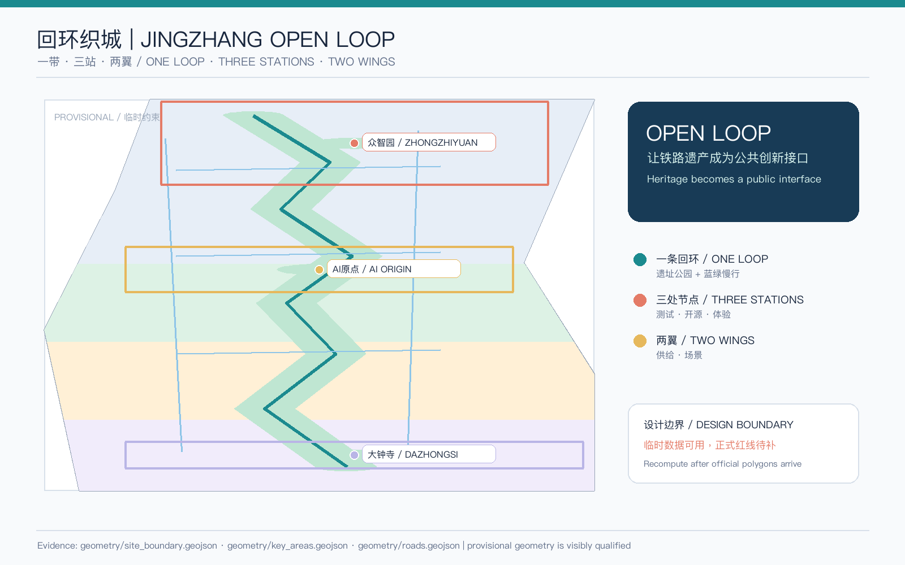
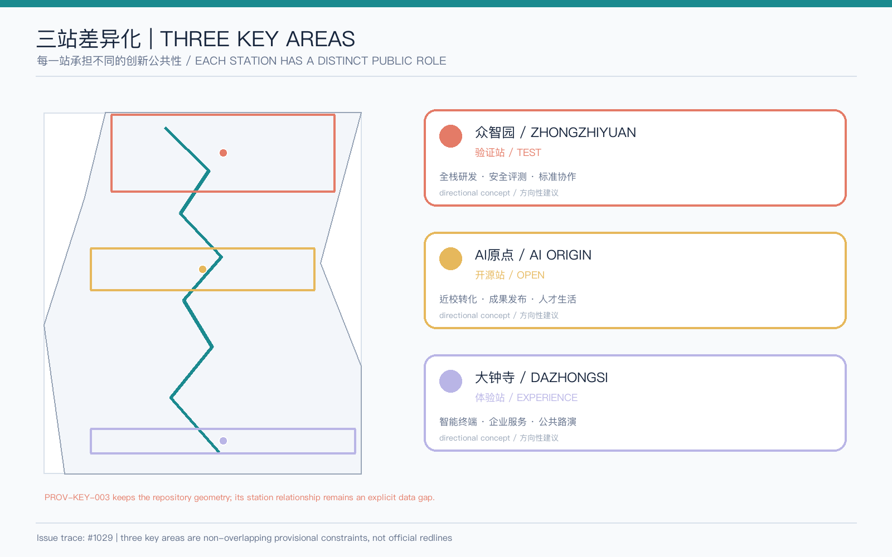
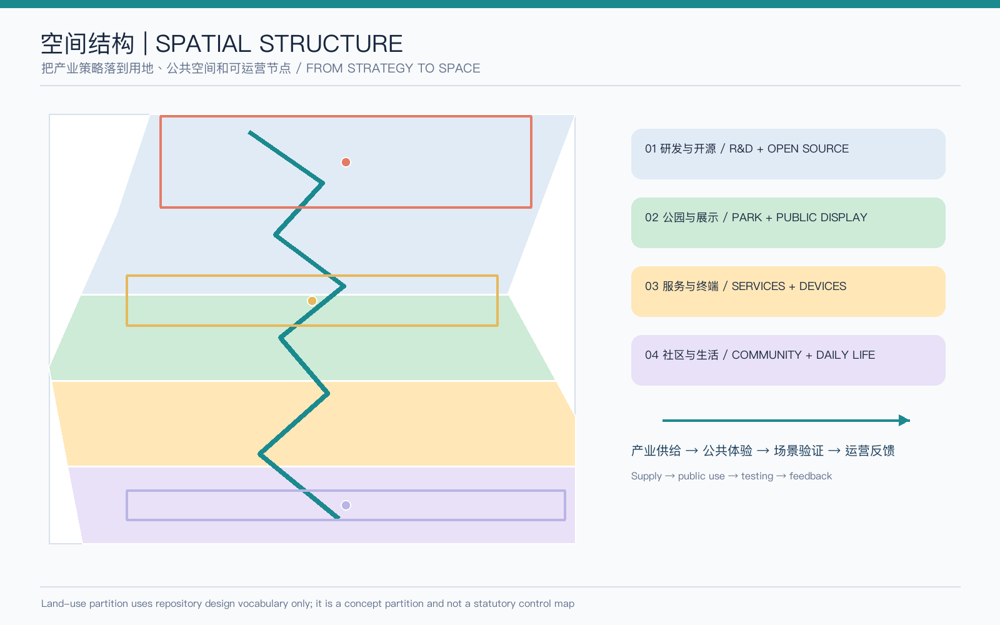
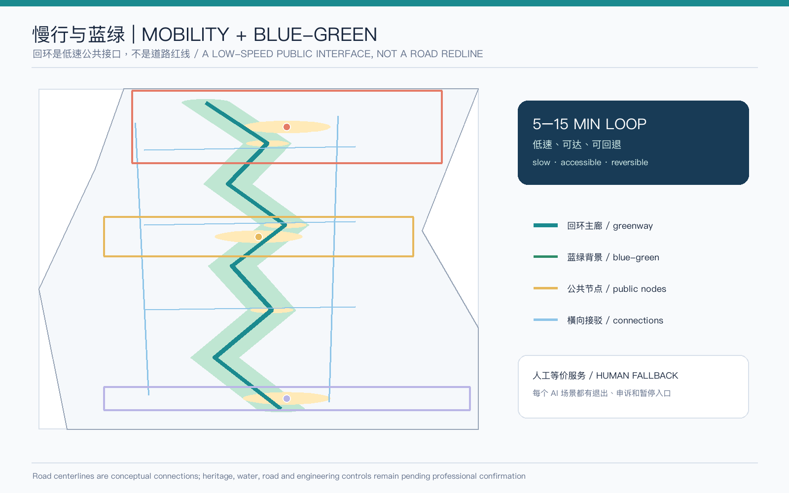
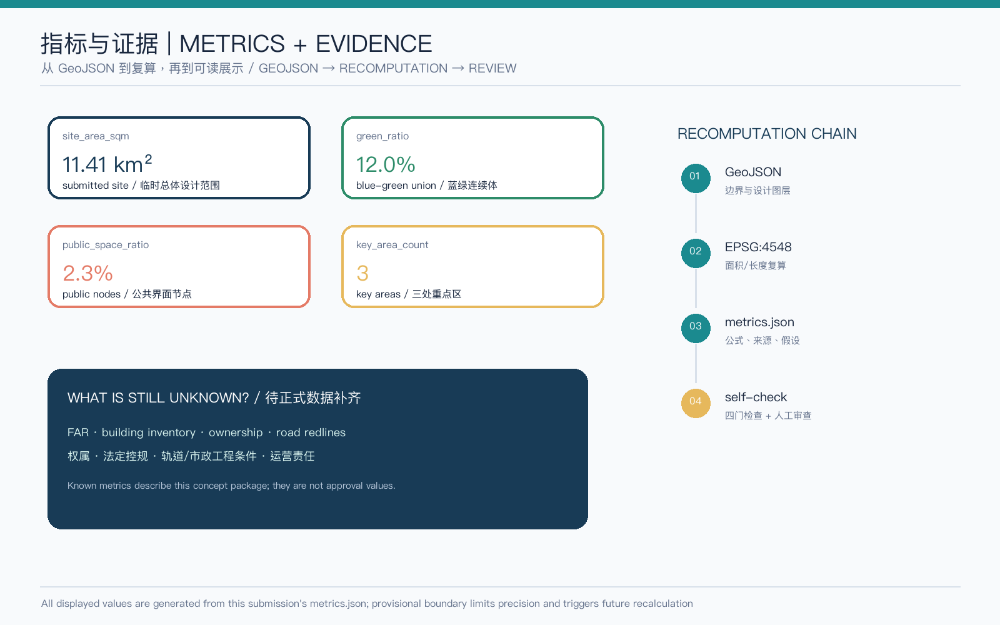

回环织城 | Jingzhang Open Loop
把遗址公园变成可走、可试、可回退的公共创新回环
PROVISIONAL / 临时约束 · content eligible, precision pending official geometry总览地图

主叙事：遗址公园慢行脊连接三处重点区，并以横向公共接口把两翼接回日常。
核心指标
site_area_sqm11.41 km²临时总体设计范围 / provisional site
green_ratio12.0%蓝绿连续体 / blue-green union
public_space_ratio2.3%公共界面 / public nodes
key_area_count3三处重点区 / key areas
三层范围
43.6 km²
统筹研究：创新生态
统筹研究：创新生态
11.4 km²
总体设计：回环织城
总体设计：回环织城
368.4 ha
重点区域：三站详细设计
重点区域：三站详细设计
三区两翼
供给—体验—反馈
供给—体验—反馈
重点区域

众智园负责验证，AI原点负责开源，大钟寺负责体验；PROV-KEY-003 的站点关系仍待官方核验。
用地分区

用地分带完整覆盖临时边界；代码来自仓库设计词汇，不是法定用地控制。
交通慢行 + 蓝绿公共空间

回环、步行、骑行和公共节点组成低速接口；每个场景保留人工等价服务。
AI 场景
12 张场景卡、6 类测试/验证边界、5 类用户画像、3 个朝圣地标在 proposal.md 中展开；所有均为概念建议。
建筑 + 更新项目
8 个概念建筑基底，保留/改造优先；新建仅保留为待专业核验的交通服务节点。
一期公共界面 → 二期场景开放 → 三期运营复核。
任务覆盖
PASS · 17 announcement tasks + 6 agent tasks mapped
矩阵把章节、图层、指标、图纸、HTML、来源、假设和自检项逐项挂接。
自检状态
PASS · formal package gates prepared
临时边界与数据缺口仍需正式资料补齐。
来源
官方公告、用户清权任务书、仓库资料登记、专业标准本地快照、临时几何和 Issue #1029。完整 provenance 在 sources.json。
假设
边界、KEY-003 定位、控规/权属/市政条件、AI 数据授权和运营责任均有明确待复核项。
证据链 / Evidence chain

图纸和 HTML 是解释层；GeoJSON、metrics、矩阵、sources、assumptions 和自检是审计层。当前方案不构成官方批准、建设承诺或精确控制结论。